Computóloga explorando educación, datos y sociedad
Soy graduada en Ciencias de la Computación con especial interés en desarrollo de software, análisis de datos e IA. Cuento con experiencia en web scraping, manejo de datos abiertos y proyectos interdisciplinarios con temáticas sociales. Busco dar mis primeros pasos en la industria del software, trabajando junto a personas que me motiven a continuar creciendo como programadora y como profesional.
Si te interesa mi perfil y querés trabajar conmigo, no dudés en contactarme!
Líneas de interés: IA Neurosimbólica, Sistemas Multi-Agente, Análisis de Datos Abiertos y Filosofía de la Computación.
Ayudante Alumna y Profesora Ayudante en FAMAF - UNC
|__ Plan de estudios
|__ Introducción a los Algoritmos (2022)
|__ Algoritmos y Estructuras de Datos I (2022 y 2023)
|__ Algoritmos y Estructuras de Datos II (2023)
|__ Base de Datos (2026)
CV